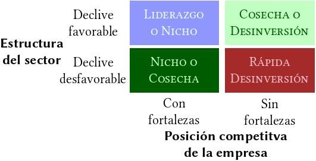

Este artículo es un resumen de [Bilbao] , capítulo 4, epígrafe V
Un sector entra en la fase de madurez cuando deja de crecer a un ritmo expansivo y crece a un ritmo más lento. Se dan una serie de cambios en el ambiente competitivo: cambios en el diseño estratégico de las empresas, de la estructura organizacional e incluso en el liderazgo de las empresas.
Cambios que se producen en la transición a la madurez
- La disminución del crecimiento significa más competencia por la participación en el mercado.
- Los compradores son cada vez más exigentes y se hacen más fuertes en la negociación de sus compras.
- La competencia suele cambiar hacia un enfásis mayor en el coste y servicio.
- Las empresas tienen un problema de saturación al añadir capacidad de producción.
- Es difícil conseguir nuevos productos y aplicaciones.
- Aumenta la competencia internacional.
- Disminuyen los beneficios del sector, tanto para las empresas productoras como para las distribuidoras.
Estrategias en sectores maduros
La primera consecuencia de la madurez de un sector son los cambios de las interrelaciones de las cinco fuerzas del modelo de Porter, que conducen a un replanteamiento de los tres tipos genéricos de estrategias: estrategia de costes, estrategia de diferenciación y estrategia de enfoque
Estrategia de costes
La fuente más importante de ventaja en costes en sectores maduros son:
- Economías de escala
La estandarización, común en los sectores maduros, propicia la explotación de las economías de escala. Las empresas grandes con mayor cuota de mercado pueden mantener su ventaja competitiva.
- Insumos de bajo coste
Los competidores más pequeños tienen acceso a inputs más baratos. Las empresas grandes tienen posiciones de costes mayores debido a la presión de los sindicatos.
- Bajos costes generales
Existe una correlación muy fuerte entre las reducciones de gastos generales y la rentabilidad de las empresas en sectores maduros. Las estrategías más exitosas en este sentido son las siguientes:
- Cirugía en activos y costes
- Recorte selectivo de productos y mercados
- Aumento escalonado de la productividad
Estrategia de diferenciación
"... la estandarización... reduce las posibilidades de diferenciación, pero no las elimina por completo."
—Robert Grant
- La innovación como vía de diferenciación
Según Abell (1993), redefinir los límites del mercado (añadir grupos de clientes y/o productos/servicios complementarios) ofrece oportunidades para formular nuevas estrategias.
La evidencia empírica avala la teoría de que la innovación es rentable, incluso en sectores maduros.
El proyecto PIMS concluyó las relaciones (ROI~Calidad) y (ROI~I+D) son más robustas en mercados maduros que en mercados en crecimiento.
En muchos sectores maduros, los innovadores estratégicos son, frecuentemente, empresas recien llegadas.
Estrategia de enfoque
Uno de los últimos segmentos a los que acuden las empresas cuando su sector alcanza la madurez es la competencia en mercados internacionales.
Estrategia y cambios en la estructura organizativa
La transición a sectores maduros debe ir acompañada de ajustes estructurales para llevar a buen término la estrategia. Los principales cambios afectan a los sistemas de control y a la motivación del personal.
Problemas de estructura en sectores maduros
- Disminución de las expectativas para el desempeño financiero
- Más disciplina de la organización
- Disminución de las expectativas del progreso
- Prestar mayor atención a la dimensión humana de la empresa
- Recentralización de centros de costes y beneficios
La burocracia maquinal y la eficiencia
La madurez esta caracterizada por entorno sencillo y pocos cambios, por lo que a este entorno se le asocia el modelo organizativo que [Mintzberg] llama burocracia maquinal
Principales características:
- Jerarquía de autoridad establecida con exactitud
- Sistema de lineas verticales de comunicación que han de ser observadas
- División reglamentada del trabajo basada en la especialización
- Sistemas de reglas y principios que establezca los derechos y deberes de todos los miembros de la organización
- Sistema de formas de procedimiento exactamente definidas para la realización de las tareas
- Estructuras que funcionan como maquinas integradas y reguladas.
Para [Mintzberg], cuando hay un conjunto de tareas sencillas y repetitivas, la burocracia maquinal es la más eficiente, donde están presentes los cinco elementos:
Un consejo de dirección o director en la cúspide.
Una tecnoestructura encargada de:
- planificación estratégica
- formación
- dirección de operaciones
- diseño y análisis de sistemas
Un staff de apoyo que preste:
- asesoramiento legal
- relaciones públicas
- gestión de nominas
- ...
Unos mandos intermedios encargados de:
- subdirección de operaciones
- marketing
- organización de planta
La base con:
- agentes de compras
- operadores de maquinaria
- ensambladores
- personald e ventas y distribución
A pesar de la claridad y fácil comprensión, hoy se tiene que abandonar la burocracia maquinal por estos cinco factores que apunta Grantt (1998)
- Aumento de la turbulencia del entorno
- Mayor énfasis en la innovación
- Nuevas tecnologías de procesos
- Alienación y conflicto
- Ejemplo japonés
Como respuestas a estos factores, las empresas han sufrido un ajuste sustancial, destacándose:
- Mayor descentralización en la toma de decisiones
- Mayor enfásis en las economías de escala
- Mayor énfasis en la cooperación lateral
- Amplio uso de los incentivos basados en beneficios
Estrategias para los sectores en declive
Cuando un sector maduro sufre continuadamente un descenso de la demanda junto a un exceso de capacidad habrá entrado en declive.
Factores estructurales que determinan el sector en declive
- Condiciones de la demanda
lalala
- Incertidumbre de la demanda
lalala
- Barreras de salida
lalala
Alternativas estretégicas
Según [Grant], las posibles estrategias en sectores en declive, de acuerdo con la posición competitiva de la empresa y la estructura del sector son cuatro: Liderazgo, Nicho, Cosecha y Desinversión
- Liderazgo
Consiguiendo el liderazgo en el final del ciclo de vida del sector, una empresa puede desplazar a sus competidores. Una vez alcanza esta posición, la empresa puede elegir, entre mantener el liderazgo o una cosecha controlada. En esta posición, a la empresa le resulta fácil elegir entre una estrategia de costes o de diferenciación. Algunas tácticas para alcanzar el liderazgo:
- Políticas agresivas de marketing
- Reducir las barreras de salida de los competidores
- Proporcionando información fiable sobre la situación del mercado
- Elevar el riesgo de permanecer en el mercado para otros competidores
- Nicho
El objetivo es identificar un segmento del sector que pueda mantener una demanda estable.
- Cosecha
Consiste en maximizar el cash-flow con los activos actuales. Es una estrategia complicada que conlleva bastantes riesgos. Algunas tácticas:
- Eliminar nuevas inversiones
- Disminuir el presupuesto de mantenimiento, publicidad y/o investigación
- Desinversión
Desinvertir cuanto antes de un sector en declive ayuda a minimizar los costes de las barreras de salida.
Referencias
| [Bilbao] | Paloma Bilbao, et al (2013), Política de Empresa y Estrategia, 3ªEd., Editorial Universitas |
| [Mintzberg] | (1, 2) Henry Mintzberg, (1983), Structure in Fives Designing Effective Organizations, Prentice Hall |
| [Grant] | Robert M. Grant (2008), Contemporary Strategy Analysis, Blackwell Publishers |
Comments
comments powered by Disqus